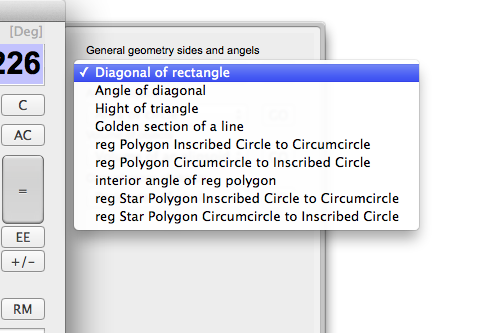
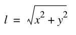
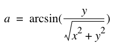
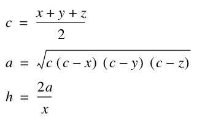
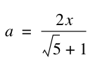
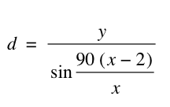
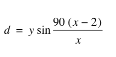
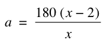
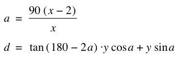
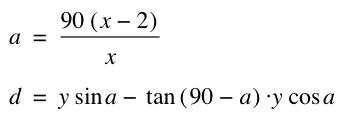

General geometry sides and angles.
In this group, you will find diverse functions, that does not fall into categories for area, volume, or circumference formulas. Below are the functions in this group:

The first function in this group is the diagonal of rectangle. This is also a triangle function - where we use good old phytagoras formula for calculating the hypotenuse from the length of the catheters.
diagonalRect(x; y )
Where
x = length of first side
y = length of second side
Using the following formula:

Example:
Diagonal of a rectangle that is 90 cm wide, and 50 cm high:
diagonalRect(50;90)=102.9563014
----------------------
The next one is the angle between the diagonal and the baseline of the rectangle.
diagonalAngle(x; y )
Where
x = width of rectangle
y = hight of rectangle
Using the following formula:

Example:
A 20 cm wide rectangle, 15 cm height have a diagonal. What is the angle of that diagonal?
diagonalAngle(20;15)=36.86989765
------------------------
Next one is the height of a rectangle. This one calculates the height of ANY rectangle. For rectangles with one 90 degrees angle, it is pretty easy, but when it comes to other rectangles, it is a bit more complicated to calculate. This one uses Herons formula for that, where we first calculate the area, and then takes the height from that.
TriangleHeight(x; y; z )
Where
x = length of base
y = length of second side
z = length of third side
Using the following formulas:

Example:
TriangleHeight(20;12;15)=8.966569855
-------------------------
The next formula up, is calculating the golden section of a line. That is, for a line "C", that is split into two pieces "A" and "B", If the proportion of A to C, is the same as B to A, then we have a golden section. This function finds the length of the part A. Subtracting it from C, will of course give us part B.
GoldenSectionA(x )
Where
x = Lengt of line A+B
Using the following formula:

Example: For a 20 cm long line, what is the golden section A?
GoldenSectionA(20)=12.36067978
----------------------
Now, we move over to regular polygons, inscribed circles and circumcircle.
Defenitions:
Regular Polygon: A multisided object where all the sides is of equal lengt, and all the angles are of equal size. The regular polygons are symetrical triangle, square, pentagon, hexagon, septagon, octagon, etc.
circumcircle: If you have a circle around the center of the polygon, that exactly touches all the intersections of the sides, it is the circumcircle.
inscribed circle: if you have a circle, around the center of the polygon, that barely touches all the midt points of the sides, it is the inscribed circle.
From this, you can say, that the radius of the circumcircle is the same as the distance from the center to one of the intersections between two sides in the polygon. Likewise, the radius of the inscribed circle is the distance from the center of the polygon to any of the sides midtpoint.
First function here is Inscribed Circle diameter to CircumCircle Diameter:
polyDiaIC2CC(x; y )
Where
x = number of sides
y = diameter of Inscribed Circle
Using the following formula:
As we know, that the sum of the angles in a regular polygon, is 180*(n-2) - where n is number of sides. The polygon can be split into n-2 triangles, that each have 180 degree as sum of its angles. The 90(n-2)/n is the size of one half-angle. This we use to calulate the proportion between the inscibed sircle and the sircumcirle using the sine function.

Example:
A nut (Hexagon) is 20mm between the sides (as you use a 20mm fixed spanner on it) - what is the diameter around the edges ?
polyDiaIC2CC(6;20)=23.09401077 mm
The next function, is oposite, if we know the circumcircle, what is the inscribed circle:
polyDiaCC2IC(x; y )
Where
x = number of corners
y = diameter of Circumcircle
Using the following formulas

Example:
Let us see what the distance between the sides of the nut are, if we know the diameter around the edges:
polyDiaCC2IC(6;23.09401077)=20
----------------------
The next function give us the interior angle of a regular polygon.
angleRegPolygon(x )
Where
x = Number of sides
Using the following formula

Example:
What is the interior angle of a hexagon ?
---------------------
Now, we head into the realm of regular star polygons. Regular star polygons, you get if you extends the line of the sides of a regular polygon, to they intersect. A pentagram is an example of a regular star polygon. It is not any star shaped regular polygon, as the rectangles around has to be adjasent with the sides of the "inner polygon". If you stretch the triangles, it might be symetrical, but not regular.
The inscribed circle here will tuch all the inner edges of the polygon, and the circumcircle will touch the outher edges of the polygon.
First we go from Inscribed Circle to CircumCircle:
polyStarDiaIC2CC(x; y ) - Regular star polygon diameters: Inscribed Circle to Circumcircle
Where
x = number of sides
y = diameter of Inscribed Circle
Using the following formulas:

Example:
The inner diameter of the star polygon is 20cm what is the outher diameter:
polyStarDiaIC2CC(5;15)=39.27050984
-----------------------
The next function, is oposite:
polyStarDiaCC2IC(x; y ) - Regular star polygon diameters: Circumcircle to Inscribed Circle
Where
x = number of sides
y = diameter of Circumcircle
Using the following formulas:

Example:
If we calculate the opposite value from the previous function:
polyStarDiaCC2IC(5;39.27050984)=15
-------------
This was the last one in this series. There are more geometric functions if you head into the
area of object section.